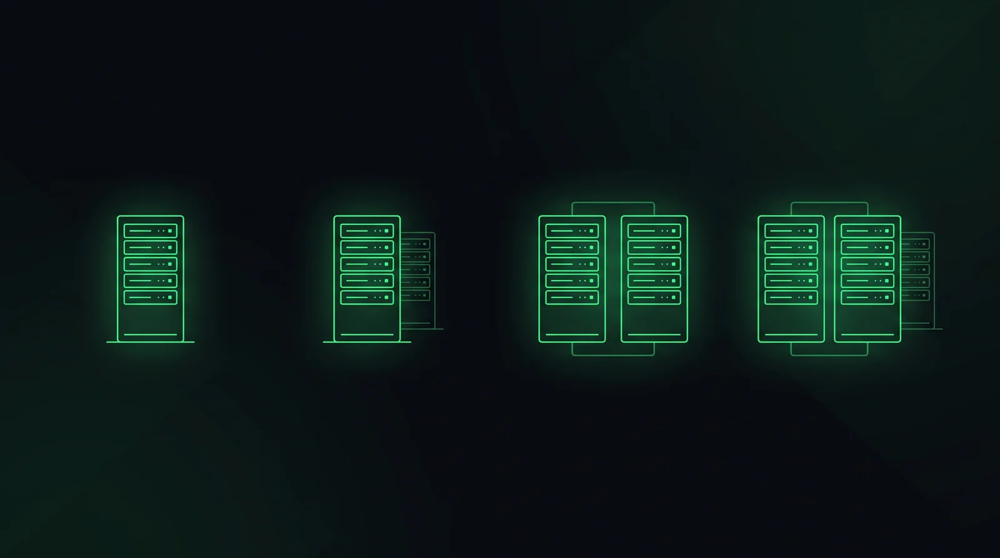

If you've read our Tier explainer, you already know the punchline: Tier I is N, Tier II is N+1, Tier III is 2N, and Tier IV is 2N+1. The Tier system isn't a separate idea from redundancy — it's just redundancy given four official names by the Uptime Institute. Understanding the underlying levels makes the Tier conversation click into place, because "what Tier do you want" and "how much duplicate infrastructure are you paying for" are the exact same question.
What "redundancy" actually means
Every critical system in a data center — power, cooling, and often network paths — has a baseline capacity required to run the building at full load. Call that baseline N. Redundancy is simply how much extra capacity sits on top of N, ready to take over the instant something fails or needs maintenance, so the servers never notice.
The letter notation (N, N+1, 2N, 2N+1) describes exactly how much extra you're building, and it applies independently to each system — a building can run 2N power with N+1 cooling, for instance, which is exactly the kind of mixed configuration that makes Tier conversations with clients more nuanced than the four-tier label suggests.
| Level | What it means | Roughly maps to |
|---|---|---|
| N | Exactly enough capacity to run the load. No spare. | Tier I |
| N+1 | Baseline capacity, plus one extra unit that can cover a single failure or maintenance event. | Tier II |
| 2N | Two complete, independent systems, each sized to carry 100% of the load alone. | Tier III |
| 2N+1 | Two complete independent systems, plus a spare on top of that. | Tier IV |
N — the baseline
N is capacity with zero redundancy: exactly as many UPS units, generators, or cooling units as the math says you need, and not one more. If any single component fails, or needs to be taken offline for maintenance, the building loses capacity — potentially triggering a shutdown of part of the load.
N is rare in anything called a "data center" today, since even modest facilities want at least one layer of protection. It shows up mostly in smaller server rooms, edge deployments, or non-critical IT closets where downtime is inconvenient rather than catastrophic.
N+1 — one spare component
N+1 adds a single extra unit to the baseline — one more UPS, one more chiller, one more generator than the load strictly requires. That spare unit can absorb one failure, or let one component go down for scheduled maintenance, without interrupting the critical load.
This is the most common redundancy level for general enterprise IT and cost-conscious facilities: meaningfully more resilient than N, at a fraction of the cost of full duplication. Its limitation is capacity math — N+1 protects against exactly one simultaneous failure. If a second component fails while the first is already down for repair, you're back to running on the bare baseline.
2N — full duplication

2N is where redundancy stops being "extra parts" and becomes "an entire second system." Two complete, physically independent chains — from utility feed or chiller plant all the way to the rack — each sized to carry 100% of the critical load on its own. If one entire system fails outright, the other one simply keeps running at full capacity, no degradation.
This is a fundamentally different design problem for the architect, not just a bigger equipment schedule. Two independent systems generally mean two electrical rooms, two mechanical yards, and two routing paths that can never cross or share a single point of failure — which is exactly the kind of constraint that eats floor area and drives early massing decisions on a data center project.
2N+1 — full duplication, plus a spare
2N+1 takes the two complete independent systems of 2N and adds one more spare unit on top, for the rare case where you need to survive a full system failure and a component failure in the surviving system at the same time — or run planned maintenance on one full system while still carrying a safety margin on the other.
This is the highest redundancy level in common use, associated with Tier IV and reserved for facilities where downtime cost is measured in the sort of numbers that make the extra capital expense an easy sell: major financial exchanges, hyperscale cloud regions, and similar mission-critical infrastructure.
Why this decides your floor plan, not just your spec sheet
Redundancy level is one of the earliest, highest-impact decisions on a data center project precisely because it isn't just an equipment quantity — it's a spatial and structural constraint. Higher redundancy generally means:
- More electrical and mechanical rooms, physically separated so a single fire, flood, or fault can't take out both paths at once
- Larger structural footprint and floor-to-floor heights, to accommodate duplicated equipment and the routing that connects it without crossing paths
- Longer, more constrained cable and pipe routing, since true independence means two full paths that never share a chase or a riser
- Earlier coordination between disciplines, since the redundancy strategy shapes the structural grid before mechanical or electrical engineers can finalize their own layouts
This is exactly why redundancy comes up early in the same BIM coordination conversations that shape the rest of a data center project — get the redundancy strategy wrong at the concept stage, and no amount of clash detection later fixes a structural grid that was never sized for two independent electrical rooms.
N, N+1, 2N, and 2N+1 aren't abstract labels — they're a direct description of how much duplicate infrastructure, and how much duplicate floor area, a project is paying for. Tier is just that same decision wearing an official name.
How to talk about it with a client
Clients rarely open with "we want N+1 cooling." They open with a Tier number, a budget, or a vague sense that "it needs to be reliable." Translating between those and the actual redundancy level is a big part of the architect's job in the first few meetings:
- Ask what failure they're actually worried about — a single component going down, or losing an entire system. The answer maps directly to N+1 versus 2N.
- Connect redundancy to floor area early, before a budget gets locked to a Tier number nobody has translated into square footage yet.
- Separate the systems. A client doesn't have to pick one redundancy level for everything — 2N power with N+1 cooling is a legitimate, common way to control cost while protecting the system that matters most.
- Use the Tier number as a starting question, not a finished spec. "Tier III" tells you the client wants 2N somewhere — the real design conversation is figuring out exactly where.
N is the baseline, N+1 adds one spare part, 2N duplicates the entire system, and 2N+1 duplicates it and adds a spare on top. Once you can translate a Tier number into that language, you can have the real conversation about floor plan and budget before a single wall gets drawn.